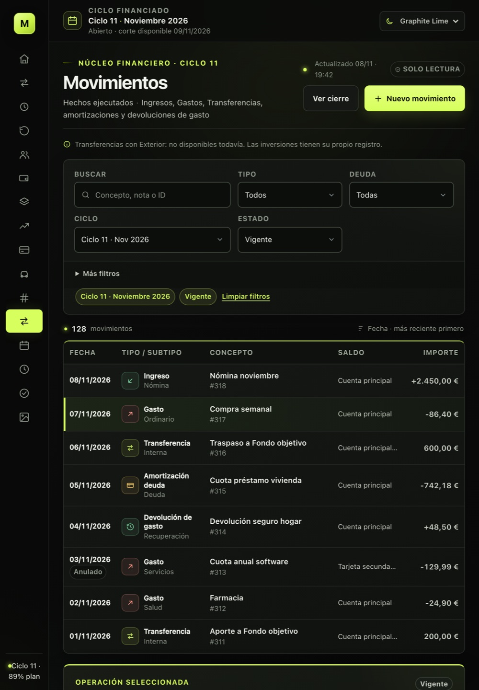
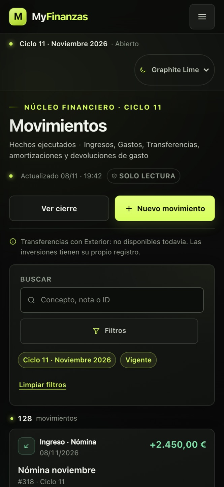
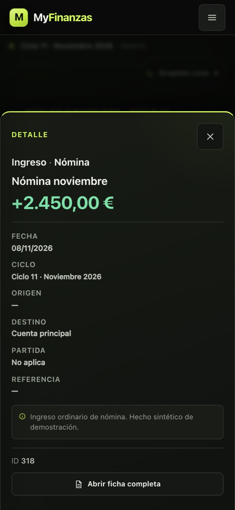
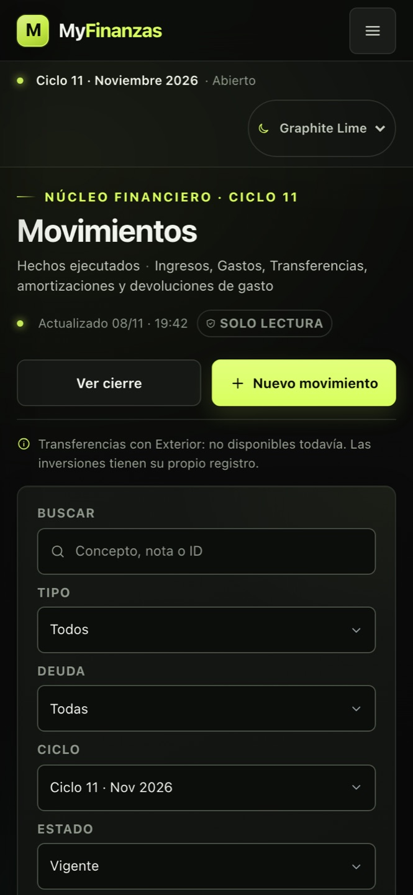
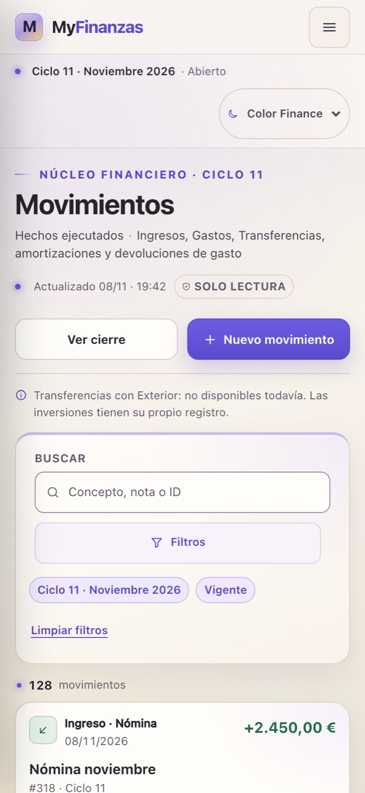
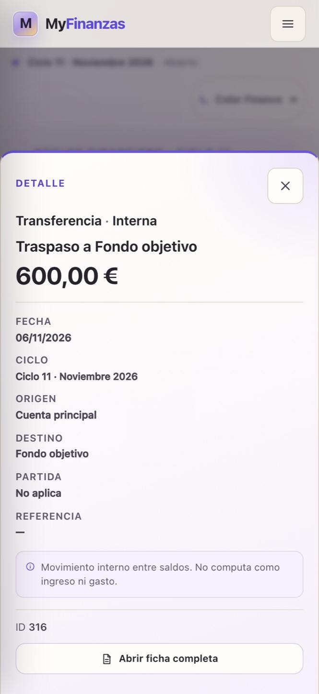

MyFinanzas · Fase 2 · Movimientos responsive
La tabla se convierte en tarjetas y el detalle en hoja
Graphite y Color en tableta y móvil; la misma estructura C, filtros y selección.
Capturas a 820 y 390. Pastel Editorial se limita a escritorio en esta entrega, según el alcance acordado.






Graphite · tablet
La sidebar se reduce a iconos, los filtros pasan a dos filas y la tabla conserva las columnas. El ciclo secundario se consulta en el detalle para no truncar filas.
Graphite · móvil
La tabla se sustituye por tarjetas; la tarjeta seleccionada usa borde lima y la hoja de detalle mantiene el contraste. Los filtros abiertos caben en una columna.
Color · móvil
La tarjeta seleccionada usa lavanda y el detalle se abre en hoja clara. El violeta se reserva para selección y enlaces; los importes mantienen verde/rojo semánticos.
Tablet y móvil comprobados sin overflow. Los controles móviles visibles cumplen 44 px. Datos sintéticos; no hay integración.